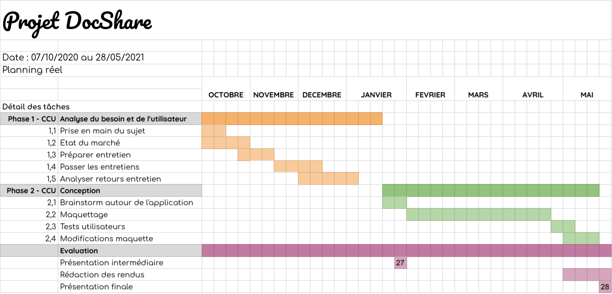

Planning du projet
Faciliter la collaboration et la mise en relation des médecins dans un contexte de remplacement médical. Aider à pallier les problématiques de manque de communication entre les médecins titulaires et remplaçants en France, responsables chaque année de remplacements non pourvus.

Notre vision
Faciliter la collaboration et la mise en relation des médecins dans un contexte de remplacement médical. Aider à pallier les problématiques de manque de communication entre les médecins titulaires et remplaçants en France, responsables chaque année de remplacements non pourvus.
North Star
Ratio nombres d’annonces pourvues/ nombres d’annonces postées.
KPIs
- Critère de fréquence d’utilisation chez les remplaçants.
- Nombres d’annonces postées → montre le taux de fréquentation du site des titulaires.
- Nombres d’annonces pourvues → montre l’attrait des annonces.
- Temps entre la publication d’une annonce et la signature finale de contrat → montre la rapidité de trouver un remplaçant et effectuer les démarches de remplacement.
User Journey
La User Journey qu'on a rédigé intègre les considérations techniques, la séparation en différents blocs et la liste de test A/B et fake door test détaillée comme ce qui suit :
RoadMap
Ajoutez une roadmap contenant ces blocs, ou vous justifiez la taille, et la priorité par l'impact, par la KPI qu'ils affectent, ou par d'autres raisons (à préciser)
Rétrospective sur le projet
Ce que nous avons apprécié :
- Le sujet était très intéressant et s’inscrivait parfaitement dans une optique « transdisciplinaire », nous avons pu travailler nos compétences en CCU, en maquettage et en programmation web, domaines dans lequels nous venons de nous initier.
- Le travail en équipe sur des tâches parallèles lors d’un projet. Cela nous a permis de nous familiariser avec cette méthode de travail qui demande une communication et une manière de travailler différentes.
Ce qui aurait pu être amélioré :
- La crise de la Covid-19 nous a handicapé les réunions en présentiel.
- Le sujet de notre projet bien que très intéressant demandait des compétences très diverses pour être mener au bout, que nous n’avions pas toujours, notamment pour la conception d’application mobile. Pourtant nous avons bien réussi nos objectifs et on met à dispotion les documents nécessaires pour qu'un autre groupe prenne le relais du projet.